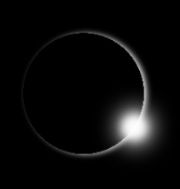

Summer Event of the Year!
Are you looking for something unusual to do to end your summer?
On August 21, 2017, the United States will be part of the path that a Total Solar Eclipse will pass through. This will be the end of summer party event unlike any other.
Is it a big deal?
Even though total eclipses occurs on average once every 18 months somewhere on Earth, this is the first one in the U.S. since 1979, according to NASA's "Eclipse 101" website. As the next total eclipse will not occur in the U.S. until April 8th, 2024, this will be a rare opportunity for people in the United States to witness firsthand this natural wonder. It will also be visible in parts of Canada, South America, the Pacific, and northwest Europe. Anyone lucky enough to be in the path of totality will see the complete blocking of the sun by the moon, turning day into night. This path is the moon's umbra, casting a narrow strip of shadow across an area approximately 70 miles wide. During totality, a period when the sun's photosphere is completely covered by the moon, the corona of the sun is visible to the naked eye. Before and after totality, though, always view with proper eye protection!
More on eye protection here:Eye Safety
Lucky enough to be in the path of totality?
During totality, when the moon has completely ecliped the sun, this is the only time you can look at it with the naked eye! Depending on your location you might see a Diamond Ring that appear right before and right after totality, again with proper protection. As totality approaches, only low-lying valleys on the moon's edge allow sunlight through; those bright spots are called Baily's Beads. Don't bother taking pictures or videos, just enjoy the event as there will be plenty of photos and recordings available afterwards.
